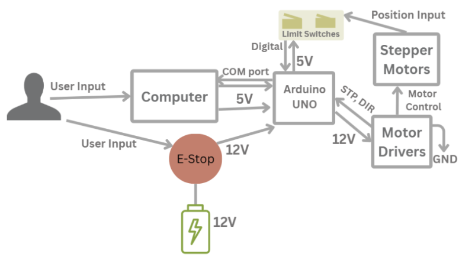

Components
- 3 Nema 17 stepper motors
- 1 Creality 42-34 motor
- 3 A4988 motor drivers
- 1 L298N motor driver
- 2 limit switches
- 1 Arduino UNO
- 12 V power source
- 1 E-stop
- 1 Bread Board
How it all connects
The A4988 motor drivers connect the Arduino to the Nema 17 stepper motors, and the L298N motor driver connects the Arduino to the Creailty 42-34 motor. The limit switches are positioned at the bottom of the Y-axis of movement and the inner end of the X-axis of movement, each with a pull down resistor between the connection to the Arduino as both are set to default high. The 12 volt power source is directly connected to the E-stop which is then directly connected to the bread board.
Energy Flow Diagram
Figure 1: Electrical Energy Flow
Circuit Diagram

Figure 2: Circuit Diagram